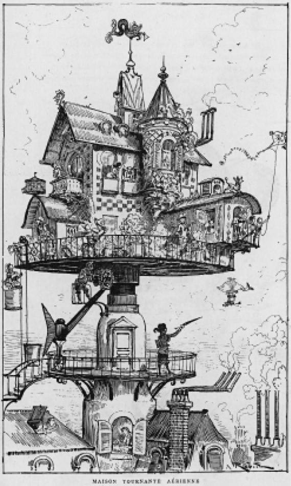
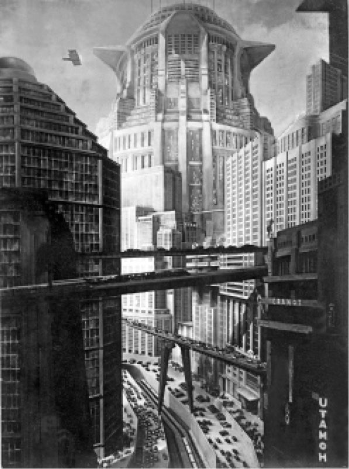

城市是技术性构建的终极体现，由于这个原因，科幻在很大程度上属于都市文学模式。理查德·杰弗里斯的《当伦敦消失后》（1885）是一部描述伦敦沉入腐臭的沼泽之后大自然得以恢复的后都市题材的小说，即使是这本书也可以被当作19世纪城市发展的反对之声。科幻小说对城市的表现各有千秋，把城市当成了技术变革的实验室。例如，阿尔伯特·罗比达的《20世纪》（1890）描述了巴黎在不久的将来改头换面后的景象，用喜剧的手法刻画了一座商业主义泛滥成灾的城市。有一幅插图表现了凯旋门被投机商买下之后的情形：在那里建起的一座巨大的钢铁平台使得凯旋门相形见绌，在钢铁平台之上是新国际饭店，风格混杂，一味追求宏伟的气派。视觉上的不平衡是对20世纪新风尚的喜剧性讽刺，这种新风尚也从广告标识的泛滥和人们对快速交通的痴迷中反映出来。卢浮宫甚至有一条电气化甬道，让游客可以不费力地从展品前经过。“空中旋转屋”则在传统城市的高处展示了新技术。罗比达笔下的城市由金属建成，有着清一色的钢铁结构。
弗里茨·兰的《大都会》（1927年初版，2002年再版）为科幻电影提供了一座城市的原型。严格来讲这座城市有两个形象，一个是地上的大都市，是为管理层的精英及其家人而建的，另外一个则是劳工的城市，位于地下。片头展现了电影的场景，突出了属于统治者的阶梯式建筑群，其形态部分参照了勃鲁盖尔的画作《巴别塔》，部分来源于弗里茨·兰对曼哈顿的印象。这个建筑群从画面中淡出，正在运转的巨大机器的影像显现出来。

图8 阿尔伯特·罗比达的《20世纪》（1890）中的空中旋转屋
正是这些机器把大都会定义为怪兽一般存在的城市工业建筑群。特娅·冯·哈布在1927年的电影原著小说中描述了这座“新巴别塔”中统一着装、统一行动的工人。电影中大都会的结构性等级制则再现了哈布的设定，工人的地位甚至在机器之下。《大都会》为后来科幻中的城市形象设定了模式，这种模式同20世纪20年代的城市规划密切相关，如建筑师休·费里斯的《明日大都会》（1929）便为城市规划提供了现代主义的、几何造型的模型。
在《现代乌托邦》（1905）的结尾处，H.G.韦尔斯描述了主角从健康卫生、一尘不染的瑞士风格的乌托邦回到伦敦后所感受到的震惊。他突然间发现周围都是推推搡搡的城市居民，很多还长得奇形怪状，眼见耳闻和各种气味都让他的感官难以承受。虽然韦尔斯并不苛求完美，但这种不和谐的局面是他在其未来主义的城市中所要试图避免的。在《当睡者醒来时》（1899）中，格雷厄姆发现自己已经不在熟悉的环境中，而是身处两个世纪后的伦敦。他被告知“这是财富的时代”，而这种财富的表象就是“泰坦式的建筑”。虽然伦敦还是伦敦，但它已经面目全非，难以辨认。为了增强陌生化的效果，韦尔斯只保留了少得不能再少的地名。在亚历山大·科达和韦尔斯共同制作的电影《未来事件》（1936）中，从当下到21世纪的转变通过埃维瑞城的变化体现了出来，而这座战后重建的城市则是韦尔斯笔下的典型城市。电影的开场表明埃维瑞城一开始就是以伦敦为原址建立的，正如1930年的电影《想象一下》的未来城市原型为纽约一样。在《想象一下》中，这座1980年的城市拥有高耸入云的建筑，空中和地面的交通线层层叠叠。同样，《未来事件》展示了流线型的地下城市，韦尔斯有意将其建筑线条表现得“大胆、不同寻常”。建筑物的巨大体量与电影画面下方矮小的人类形体形成了鲜明对比，大得让人无法捉摸其功能，工业城市的恢宏建筑风格由此得以体现。确实，城市中的第一个生命迹象就是工业活动。

图9 弗里茨·兰《大都会》（1927）的剧照
韦尔斯笔下的城市和《大都会》中的城市是工业秩序的象征，同样，美国营养学家米洛·黑斯廷斯所著的《永夜之城》（1920）也描述了德国凭借其死光武器而统治的未来世界。这个政权的统治核心新柏林位于地下，是一个巨大的城市——工业建筑群，可以容纳几百万人，代表了美国科幻作家对社会最丰富的科学想象。新柏林拥有巍峨的会堂和工厂，呈现出“完美的秩序、完美的体制和完美的纪律”，但是这种过度的秩序却剥夺了城市的人性。
城市常常被用作敌托邦的舞台，克利福德·D.西马克的《城市》（1952年通过编者评述集结成册的“修订”版故事合集）将背景定在未来，那时城市和人类都已经消亡，狗成了传奇故事的讲述者，它们从外部视角以一种反讽的口吻讨论人类或者城市是否真的存在过。在序言中，我们被告知，城市看起来是一种“不可能的结构”，对于任何可能有理性的生物来说，城市都逼仄得难以置信，无法让人生活在其中。詹姆斯·布利什的《飞行的城市》编织了该主题最不寻常的叙事版本之一，即把城市表现为飞船。《为了群星而生活》（1962）描述了这些飞行城市赖以存在的情形。当原材料耗竭，人们便“学俄州佬”——离乡背井去找活路 [7] 。布利什表现了一种现代性的大萧条，太空城市在其中体现了各种不同的社会可能性。约翰·布鲁纳的《城市的广场》（1965）探索了矩形空地和南美洲都城瓦多斯的政治控制之间的关联。哈里·哈里森的《腾出地来！腾出地来！》（1966）以1999年的纽约为背景，作为世界人口过多的一个缩影，这里的食物供给十分紧张。1973年据此改编的电影片名叫《绿色豆饼》，这是剧中一种合成饼干的名字。菲利普·怀利的《洛杉矶：公元2017年》（1971）描述了一座未来城市，当地严重的污染迫使人类居住到了地下。在这些小说以及其他类似的小说中，危机导致了法西斯式的统治。
塞缪尔·德拉尼的《达尔格伦》（1975）描绘了最复杂、最具有超现实风格的城市贝娄娜（根据罗马女战神命名），灾难降临到了这座城市。主角流落到城市中，有过短暂的艳遇，遇到了帮派分子和其他的幸存者，但是对城市的布局却从没有过一种整体感。德拉尼把叙事的视角限制在主角的知觉范围之内，从而取得了这样一种效果。不管主角经过多少个街区，不管他攀爬过多少座荒废的建筑，他从来没有建立一种关于远近的距离感。空间和时间不断地变换，他对城市的视觉感知也在不断变化，而这座城市总是被散落的火堆上升起的烟气笼罩。德拉尼在小说中保持严格的受限视角，从不允许读者比主角“基德” [8] 了解更多，虽然故事不断地转换为第三人称。结果，范围模糊的城市空间内部就产生了一种具有生动局部细节的超现实剧情。德拉尼的城市是碎片式的，并且终究是不可知的。
正如维维安·索布恰克所言，战后的科幻电影往往展示城市的负面形象，展现的场景不是残垣断壁就是空房荒庐。这个关注点的一个标志就是将城市塑造为控制网，描述了潜意识编程兴起的英国电视剧《超级麦克斯》和表现了奥威尔式的官僚统治政权的《巴西》（1985）均是如此，这两部影视片都制作于1985年。让–吕克·戈达尔的《阿尔法城》（1965）把以下三种类型结合到了一起：美国的私家侦探故事、惊悚间谍片以及科幻。特工雷米·考辛来自“新约克”，他的使命是去抓住或者杀死冯·布劳恩教授——后者不是我们所想的那种火箭技术专家，而是一位电脑设计师，他设计的计算机包括了阿尔法60，在电影中这台电脑位于具有未来巴黎风格的城市中心。这座城市被描述为“遥远星系的都城”，其实就是计算机自身，雷米被捕之后审讯他的就是这台计算机。
雷德利·斯科特的《银翼杀手》（1982）表现的城市依然是最复杂、最具视觉细节质感的未来城市样板之一。故事发生地从菲利普·K.迪克小说中的旧金山改为洛杉矶，这是策略性的改动，因为在美国人的想象中洛杉矶富于变化，没有城市能够望其项背。虽然电影背景设在四十年后的未来，电影中的装饰却包含了无数四十年前的美国元素，那是雷蒙德·钱德勒和黑色电影 [9] 的时代。斯科特“以图片说话”的习惯，使未来主义和时代细节独具一格地混合在一起。上一刻我们看见飞翔的汽车，下一刻就是自行车相继驰过。这造成一种不同寻常的结果，让我们看到了一座有历史的未来之城。迪克虽然没在有生之年看到电影成品，却也参观了电影摄制组并观看了拍摄花絮，为拍摄技巧捕捉到的生动细节所感染，他声称：“这是有真人生活于其中的真实世界。”在电影中，蒂雷尔公司巨大的金字塔象征着权力，片头出现的一只放大的眼睛作为核心意象，暗示着监控，或者是末日银翼杀手之眼，而眼睛这个器官是人与复制人唯一的区别。